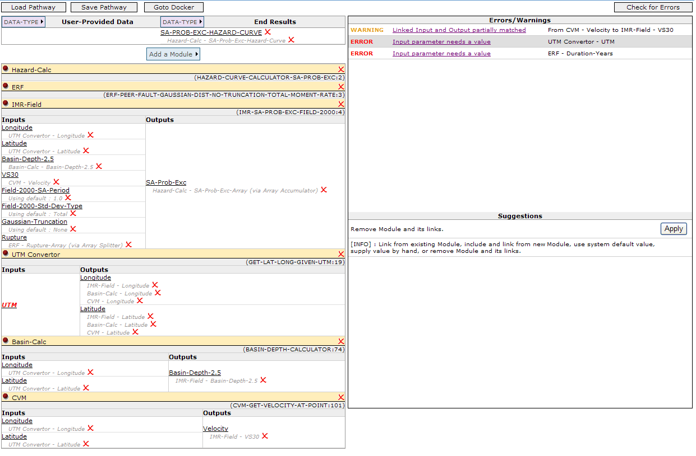

The main CAT interface
Select an End Result (from the "DATA-TYPE >" drop-down list for End Results) and "Check for Errors". A list of errors will appear on the right side. On clicking on an error, suggestions will appear below the list of errors. Also the source of the error is highlighted in red in the pathway (on the left side).
Apply a fix (Hazard-Calc module added -- Applying a fix "Checks for Errors" automatically)
Apply another fix (Add an ERF -- ERF-PEER-FAULT-GAUSSIAN-DIST-NO-TRUNCATION-TOTAL-MOMENT-RATE) You can also manually add modules (Here an IMR-Field module has been added with it's output connected to the hazard curve calculator)
Clicking on a parameter highlights the links that it can be connected to in green (including it's default value links)
In this way, choose default values for certain parameters of the ERF and IMR (as shown below). The errors complain of no input values for Longitude and Latitude (among others).
Follow the suggestions for fixes (such as for Longitude and Latitude) above. This will add a
UTM Convertor module to fulfill the input values needed by the corresponding parameters for IMR-Field.
(Note that the top 3 modules have been collapsed -- you can expand/collapse modules by clicking
on their title)
Here, we get an error about a partially matched link (because ERF outputs a rupture array, and the
Field IMR model takes in one Rupture at a time). The system suggests using an Array Splitter module
in between.
Applying the fix displays the Link as Rupture : ERF-Rupture-Array (via Array Splitter). The same thing is done for the output of IMR-Field (SA-Prob-Exc) and Input to Hazard Calc (SA-Prob-Exc-Array), except this time the
link is created via the Array Accumulator system module.
Some input fields of IMR-Field are still unsatisfied.
Following the suggestions, we add in a Basin-Calc module for the input of Basin-Depth-2.5 for Field, and also link the outputs of the UTM convertor to the inputs of Basin-Calc.
We do a similar thing for the VS30 manually, i.e. add a CVM module and link the CVM output (velocity) to the input VS30 of Field-2000, and link the outputs of UTM Convertor to the inputs of CVM.
Finally, we decide that UTM (input for the UTM Convertor), and Duration Years (Input for ERF) will be provided by the user. So we add 2 corrsponding datatypes in the "User-Provided Data" section and link them up. Checking for errors gives one minor warning for VS30 and Velocity not matching (which can be ignored).